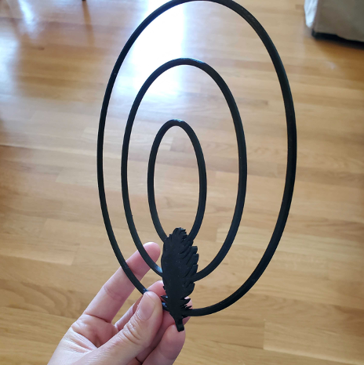
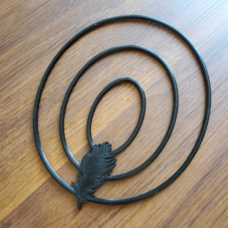
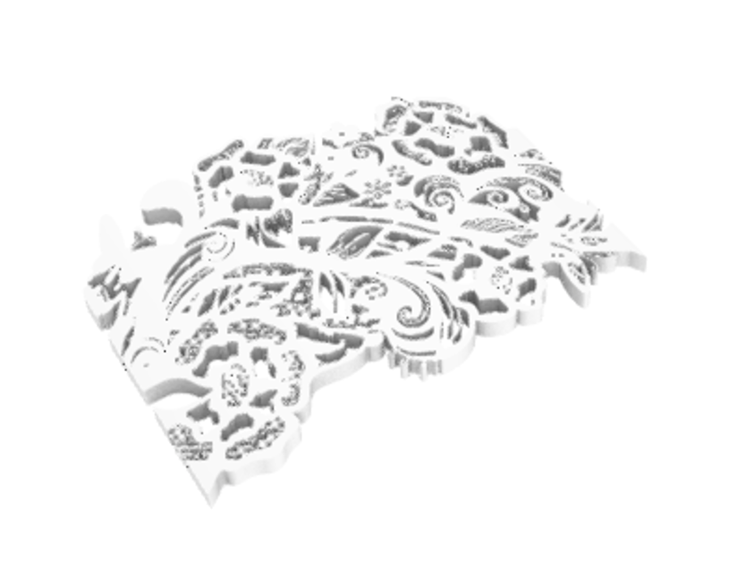

Fascinator Background
Throughout the course of this quarter my dad and I have bonded quite a bit over the things I have had to make in this class. He even dusted off his 3D printer and started 3D printing things himself! For my final project I thought wouldn’t it be nice to do something special for my mom to enjoy also! My mom is quite the stage mom, she put my sisters and I through theater our entire childhood. When I learned to sew as a hobby, she was so inspired by the idea of making her own things. A few years ago, I bought her a sewing machine for Christmas along with some classes and now she will not stop making any and all things! She has even been “hired” as a volunteer costumier at our local community college for almost 5 years now, and recently during her retirement she started to design fascinators. She is slowly starting her own little business called “Fascinators Fabuloso” and here she is showing off some of her own designs:

If you are not sure what a fascinator is, Wikipedia’s definition is “A fascinator is a formal headpiece for women, a style of millinery, originally of lightweight knitted fabric.” These odd designs are typically seen at royal weddings.

For me, it’s easier to describe it as an oddly shaped, oddly placed tiny hat or head embellishment.
Goals with this project (tasks):
I have 4 overall goals with this project
- Learning and demonstrating how to print on fabric
- Prototyping and testing different flower designs
- Creating odd shapes that create the illusion of defying physics
- Interrogate assembly options
The biggest thing I wanted to learn from my final project is incorporating my own learning and discovering how to 3D print on fabric. I think this would include creating dxf files of different patterns (such as lace) that I can use in rhino and using various online resources to help try different things. Additionally I’ll need to purchase a few yards of tulle lace, etc. from Michael’s or Joann’s

Flowers and embellishments are a big part of the design (especially my mom’s) however might potentially add weight to the end result, which could be uncomfortable. The idea here would be to try different sizes of flowers or perhaps designing my own that produce something that is comfortable and easy to pin onto/print into the end design. These flowers designed by Joshua Harker in his line Mazzo di Fiori is inspiration on how to print a flower design while saving weight.


For me, there need to be something odd and that’s what makes it a fascinator and not just a headband or a clip. I want to put something on like one of these swirls or something that really makes you question “how the heck is that on there?” The ripple on the bouquets of Josh Harker has a similar affect.


Typically, the fascinators I have seen and my mom designs stay on with a headband. But in some cases, you may need other clips or areas that need to be designed to allow for a bobby pin.
Timeline
- May 20th -May 25th : 3D printing shapes and flowers (testing)
- May 26th-May 30th : Printing on fabric
- May 31st-June 2nd Assembly
- June 3rd Final documentation
Bill of Materials
- Fabric: Tulle, Lace, and Netting
- 3D Printer (Edner 3 Pro)
- PLA: In many different colors
- Clips for fabric
- Super glue
- Sewing Machine optional
- Other hair accessories (such as bobby pins) as needed
Odd Shapes
First, I printed this ribbon I found from thingiverse, wanted to test its size and weight. I love the way it turned out because the layer direction makes it look shiny similar to a real ribbon! Only took about 8 hours to print
I also created this shape which kind of mimics the ripple effect from the Josh Harker inspiration. I created a dxf in Adobe Illustrator from a feather clipart image trace which would hold the ripples together.
I was happy with the print but with this theme being more of like a lacey cloth type look I thought it was a little too geometrical. I decided to stick with the ribbon but instead print it with a white silk filament (by SUNLU) to fit the white color scheme I am envisioning which had no issues.
I loved the shine of the white silk filament so much, I tried to print everything for the fascinator with this color. That ended up being a problem for some of my structural pieces, more on that later…
Flowers and Fabric
I decided to combine the printing on fabric goals and the flower design by embedding the fabric inside of the flower shape. This meant the flower shape and slicing needed to be able to accommodate the ‘sandwiching’ of the fabric. I got this rose from thingiverse but I wanted to change the mesh, so that the base wasn’t so thick.
This also came in very small so I had to scale it up in Cura to 800%. This rose ended up being an issue because the structure needed for the petals ended up being really difficult to separate making the end product look clunky.
I found another rose on thingiverse that had the opposite problem, so I went into Rhino with that STL to make it thicker in order to accommodate the fabric.
I also performed a boolean difference on the curved surface to help with the adhesion since im planning on gluing that piece to the base that holds everything on it. In order to allow for the fabric to be printed, I added a pause in the print to allow the extruder to retract and let me place the fabric onto the bed.
As for the type of fabric, I printed on 7 different types of fabric, inludding chiffon, tulle and lace of all different genres. Theres 8 in the picture but I decided not to experiement with the sequiny one because I knew I didn’t want to go in that direction for my project.
Being honest, I am not sure which one is officially which fabric type. I just selected them by the feel of the fabric and insuring it wasn’t too thick. Luckily, I made it to JoAnn fabrics the day before they started doing online only shopping due to COVID risks. It was really important for me to get in there and see the colors in person and FEEL the fabrics and how they move and everything. To experiment with each one, I cut out a piece about 24 cm x 19 cm of each type. I let the print of the flowers start and would place the fabric down after the pause happened.

Then let the print continue for about 25 minutes and then aborted the print to make sure it would come off the bed without messing up the print “sandwich”.

Printing on the fabric worked for every fabric I had, yay!
Of these, I chose a pretty neutral color (second one up from the bottom left) and fabric that I had because the shapes on the factinator are already really eye catching. With that, I decided to identify two pauses in Cura so that I can add two layers of fabric to really make the tulle pop when it goes on.
Assembly Parts
I first printed a base that I could use as a surface on the head to mount all of the pieces onto. This was part of the ribbon fascinator file I found on thingiverse and I just figured it would come in handy.
I scaled this down 80% because it as originally the size of the entire bed which would certainly not be necessary. 80% still ended up being a little too big, I also printed it with the top side down which was a mistake because all of the left over structure remains ruined the look so it was a good thing I learned that early, I printed the second one 60% which was then a little too small to be able to actually put a bunch of stuff on it (the flowers, the ribbon etc) but again was good to learn early.
I then test printed this with the silk, and it dawned on me the silk filament wasn’t going to work out for the pieces I need reliable structure from. Once I took it off the bed it started delaminating making taking the structure off really hard and ruining the adhesion of some of the layers.

It ended up being so flexy I needed to finish with the 3D finish just to hold its shape.
As that was curing, I decided I wanted a really interesting shape to be projected onto the base instead of just that oval shape holding everything. I decided to create another DXF from a lace pattern I found online. I image traced it in Adobe Illustrator and imported to Rhino.
The high level of detail isn’t necessary for a print and infact could affect the stability of the base if there were too many cut outs. I strategically hand-picked only the bigger curves and then some of the smaller to fill in empty spots. When they were picked, they were fixed using the rebuild function to ensure proper extrude behavior. The curve is the same curve profile as the oval just instead a rectangle was projected over that arc to accommodate all the details.
Once the shape was established, the lace was extruded through the curves surface and a Boolean difference was performed to create the holes.
This is about a 14 hour print and it’s currently still printing…
Lastly, I needed a way to get all this stuff to actually stay on your head. I printed a headband from thingiverse as an option to attach everything to the head. It makes things a lot easier than relying on a hair clip to hold the weight of everything.
The thin one ended up being a little too thin for attaching the base onto. I edited the STL to increase the height by almost half and it still wasn’t enough
I printed the second one from that file which is the same shape just much taller, so I didn’t need to edit the STL file again. I printed this one right after I had done the silk base print thinking this would work since it was a simpler shape. After seeing this headband final print, I drew the conclusion that the silk PLA was for aesthetic prints only.
I just didn’t want to keep needing to finish everything just for it to keep shape to I changed my filament to be the Proto-pasta matte white HTPLA. Originally, I had some issues with adhesion from this new filament, but that seemed to be fixed by printing with a brim instead of a skirt.
Demonstrated learnings!
- 3D printing
- Mesh editing
- Rendering
- Converting Images to 3D shapes
Bonus learnings!
- 3D printing on Fabric
- 3D Coating
- Experimenting with different printing materials